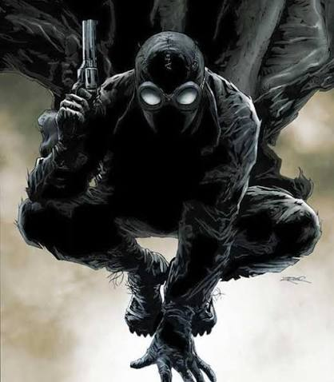

Spider-Man Noir (Tierra-90214)

Nombre Real
Peter Parker
Primera Aparición
Apareció por primera vez en Spider-Man Noir #1 (febrero de 2009), creado por David Hine, Fabrice Sapolsky y Carmine Di Giandomenico.
Lore / Historia
Ubicado durante la Gran Depresión de 1933 en Nueva York. Un joven e idealista periodista es mordido por una mística araña oculta dentro de una estatuilla de un dios araña robada. Utiliza su entrenamiento en combate y armas de fuego para luchar contra el crimen organizado liderado por el "Duende".
Logro Importante
Aporta tacticas de infiltración, sigilo y combate militar al ejército de Spider-Heroes en la lucha contra los Herederos, demostrando gran maestría en el combate sin luz.